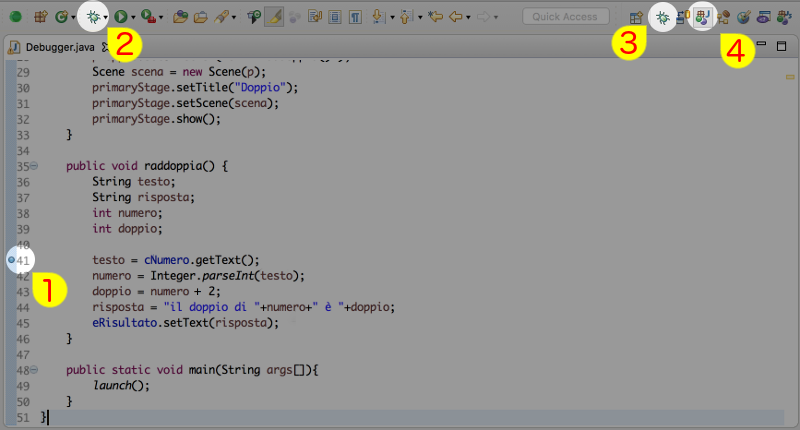
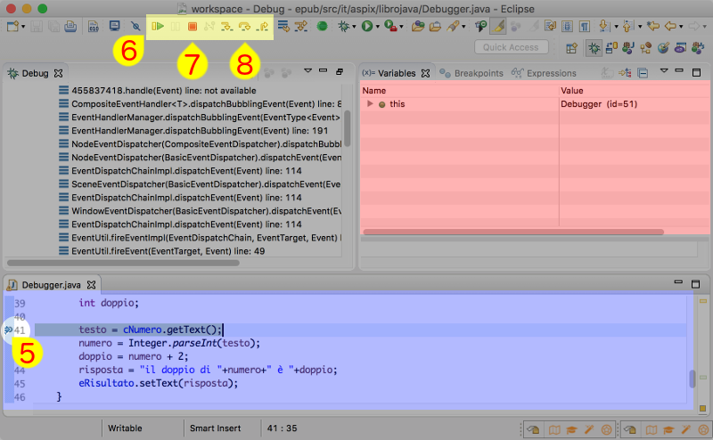
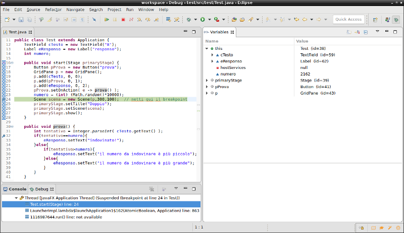

Purtroppo raramente i programmi sono perfetti... almeno alla prima stesura. Abbiamo però alcuni modi per trovare cosa non va.
Stack trace
La rima opportunità è a costo zero: in caso di errore basta leggere con un po' di attenzione quello che compare nelle console, non serve farsi impessionare dal numero di righe, è piuttosto semplice trovare dove sta il problema. Vediamo ad esempio l'output qui sotto:
Exception in thread "JavaFX Application Thread" java.lang.ArithmeticException: / by zero
at it.aspix.librojava.DebuggerEsercizio2.prova(DebuggerEsercizio2.java:32)
at it.aspix.librojava.DebuggerEsercizio2.lambda$0(DebuggerEsercizio2.java:22)
at javafx.base/com.sun.javafx.event.CompositeEventHandler.dispatchBubblingEvent(CompositeEventHandler.java:86)
at javafx.base/com.sun.javafx.event.EventHandlerManager.dispatchBubblingEvent(EventHandlerManager.java:238)
at javafx.base/com.sun.javafx.event.EventHandlerManager.dispatchBubblingEvent(EventHandlerManager.java:191)
at javafx.base/com.sun.javafx.event.CompositeEventDispatcher.dispatchBubblingEvent(CompositeEventDispatcher.java:59)
at javafx.base/com.sun.javafx.event.BasicEventDispatcher.dispatchEvent(BasicEventDispatcher.java:58)
at javafx.base/com.sun.javafx.event.EventDispatchChainImpl.dispatchEvent(EventDispatchChainImpl.java:114)
at javafx.base/com.sun.javafx.event.BasicEventDispatcher.dispatchEvent(BasicEventDispatcher.java:56)
at javafx.base/com.sun.javafx.event.EventDispatchChainImpl.dispatchEvent(EventDispatchChainImpl.java:114)
at javafx.base/com.sun.javafx.event.BasicEventDispatcher.dispatchEvent(BasicEventDispatcher.java:56)
at javafx.base/com.sun.javafx.event.EventDispatchChainImpl.dispatchEvent(EventDispatchChainImpl.java:114)
at javafx.base/com.sun.javafx.event.EventUtil.fireEventImpl(EventUtil.java:74)
at javafx.base/com.sun.javafx.event.EventUtil.fireEvent(EventUtil.java:49)
at javafx.base/javafx.event.Event.fireEvent(Event.java:198)
at javafx.graphics/javafx.scene.Node.fireEvent(Node.java:8865)
at javafx.controls/javafx.scene.control.Button.fire(Button.java:200)
at javafx.controls/com.sun.javafx.scene.control.behavior.ButtonBehavior.mouseReleased(ButtonBehavior.java:206)
at javafx.controls/com.sun.javafx.scene.control.inputmap.InputMap.handle(InputMap.java:274)
at javafx.base/com.sun.javafx.event.CompositeEventHandler$NormalEventHandlerRecord.handleBubblingEvent(CompositeEventHandler.java:218)
at javafx.base/com.sun.javafx.event.CompositeEventHandler.dispatchBubblingEvent(CompositeEventHandler.java:80)
at javafx.base/com.sun.javafx.event.EventHandlerManager.dispatchBubblingEvent(EventHandlerManager.java:238)
at javafx.base/com.sun.javafx.event.EventHandlerManager.dispatchBubblingEvent(EventHandlerManager.java:191)
at javafx.base/com.sun.javafx.event.CompositeEventDispatcher.dispatchBubblingEvent(CompositeEventDispatcher.java:59)
at javafx.base/com.sun.javafx.event.BasicEventDispatcher.dispatchEvent(BasicEventDispatcher.java:58)
at javafx.base/com.sun.javafx.event.EventDispatchChainImpl.dispatchEvent(EventDispatchChainImpl.java:114)
at javafx.base/com.sun.javafx.event.BasicEventDispatcher.dispatchEvent(BasicEventDispatcher.java:56)
at javafx.base/com.sun.javafx.event.EventDispatchChainImpl.dispatchEvent(EventDispatchChainImpl.java:114)
at javafx.base/com.sun.javafx.event.BasicEventDispatcher.dispatchEvent(BasicEventDispatcher.java:56)
at javafx.base/com.sun.javafx.event.EventDispatchChainImpl.dispatchEvent(EventDispatchChainImpl.java:114)
at javafx.base/com.sun.javafx.event.EventUtil.fireEventImpl(EventUtil.java:74)
at javafx.base/com.sun.javafx.event.EventUtil.fireEvent(EventUtil.java:54)
at javafx.base/javafx.event.Event.fireEvent(Event.java:198)
at javafx.graphics/javafx.scene.Scene$MouseHandler.process(Scene.java:3876)
at javafx.graphics/javafx.scene.Scene$MouseHandler.access$1300(Scene.java:3604)
at javafx.graphics/javafx.scene.Scene.processMouseEvent(Scene.java:1874)
at javafx.graphics/javafx.scene.Scene$ScenePeerListener.mouseEvent(Scene.java:2613)
at javafx.graphics/com.sun.javafx.tk.quantum.GlassViewEventHandler$MouseEventNotification.run(GlassViewEventHandler.java:397)
at javafx.graphics/com.sun.javafx.tk.quantum.GlassViewEventHandler$MouseEventNotification.run(GlassViewEventHandler.java:295)
at java.base/java.security.AccessController.doPrivileged(Native Method)
at javafx.graphics/com.sun.javafx.tk.quantum.GlassViewEventHandler.lambda$handleMouseEvent$2(GlassViewEventHandler.java:434)
at javafx.graphics/com.sun.javafx.tk.quantum.QuantumToolkit.runWithoutRenderLock(QuantumToolkit.java:389)
at javafx.graphics/com.sun.javafx.tk.quantum.GlassViewEventHandler.handleMouseEvent(GlassViewEventHandler.java:433)
at javafx.graphics/com.sun.glass.ui.View.handleMouseEvent(View.java:556)
at javafx.graphics/com.sun.glass.ui.View.notifyMouse(View.java:942)
at javafx.graphics/com.sun.glass.ui.mac.MacView.notifyMouse(MacView.java:127)
Le informazioni che ci interessano sono due:
- l'eccezione
- è la prima riga, il nome stesso dell'eccezione è indicativo (nell'esempio
java.lang.ArithmeticExceptionci fa capire che si tratta di un qualche tipo di problema di calcolo) e la sua descrizione che viene dopo i ":" lo è ancora di più (nell'esempio il programma ha eseguito una divisione per zero). - la riga che ha causato errore
- questa potrebbe essere meno ovvia da trovare:
partendo dall'altro la prima riga che riguarda il nostro programma (dopo
atc'è il nome del pacchetto e della classe) è quella da guardare, non è detto che sia la prima. Da questa riga possiamo vedere in quale pacchetto sta la classe con l'errore e il numero di riga dove ci sono stati problemi.
debugger
Per le situazioni più complicate gli ambienti di sviluppo ci aiutano permettendoci di eseguire passo passo il programma con uno strumento chiamato debugger.

Nel caso di eclipse per attivare il debugger si può procedere in questo modo: prima di tutto diciamo dove il programma deve interrompere la sua esecuzione facendo doppio click alla sinistra del numero di linea, a questo punto compare un pallino (il numero 1 nella figura). Successivamente avviamo il programma facendo click con il tasto destro sullo sfondo della classe e selezionando Debug As e poi Java Application oppure utilizzando l'icona del bug (numero 2 della figura) che ha un funzionamento analogo a "Run" alla sua destra ma avvia il debugger.
Quando il programma arriverà alla posizione specificata Eclipse cambierà organizzazione dello spazio di lavoro passando dalla visualizzazione normale per java (indicata dal numero 4 in figura) alla visualizzazione di debug (numero 3 in figura).
Una volta passati alla prospettiva di debug l'organizzazione della finestra cambia molto. Ci concentriamo per adesso soltanto sulle tre aree colorate.

- nell'area blu viene visualizzato il programma che stiamo ispezionando
- nell'area rossa vengono visualizzate le variabili
- nell'area gialla ci sono i controlli per far proseguire il programma
Nella finestra visualizzata il punto di interruzione (breakpoint per Eclipse) era stato posto alla linea 41 che è il punto il cui si inizia a l'elaborazione del dato per calcolarne il doppio (l'idea sarebbe questa ma il programma non funziona). La piccola freccia sopra il pallino (visibile al numero 5 della figura) indica che il programma è arrivato in questo punto ed è stato fermato dal debugger.
Nell'area di ispezione delle variabili (quella rossa nella figura) non sono ancora presenti le nostre variabili perché non hanno ancora un valore. Facendo andare avanti il programma una linea alla volta usando il controllo "Step Over" di Eclipse (numero 8 in figura) compariranno nel pannello "Variables" (area rossa) i valori delle variabili.
Nel caso dell'esempio una volta arrivati alla linea 44 sarebbe possibile vedere che la variabile numero vale 4 mentre la variabile doppio vale 6.
Il controllo "Resume" (il 6 della figura) serve per far ripartire il programma che eventualmente si fermerà la prossima volta che passerà su un punto di interruzione, il controllo "Terminate" (numero 7 in figura) serve, come è facile immaginare, per fermare il programma.
Esercitazione: modifica l'interfaccia del debugger
L'interfaccia predefinita del debugger è piuttosto affollata, proviamo a rimuovere degli elementi che adesso non ci servono per farla diventare simile a quella qui sotto.
Per spostare i pannelli è sufficiente fare drag & drop, mentre per eliminare alcune parti della barra degli strumenti bisogna aprire il menu /Window/Perspective/Customize perspective... e togliere (con attenzione!) alcune delle parti che non ci servono, nel nostro caso Navigate è stato rimosso.

Una volta impostata l'interfaccia proviamo a vedere come funziona il seguente programma individuando quale è il numero estratto per poi provare se funziona correttamente.
import javafx.application.Application;
import javafx.scene.Scene;
import javafx.scene.control.Button;
import javafx.scene.control.Label;
import javafx.scene.control.TextField;
import javafx.scene.layout.GridPane;
import javafx.stage.Stage;
public class DebuggerEsercizio2 extends Application {
TextField cTesto = new TextField("8");
Label eResponso = new Label("responso");
int numero;
public void start(Stage primaryStage) {
Button pProva = new Button("prova");
GridPane p = new GridPane();
p.add(cTesto, 0, 0);
p.add(pProva, 0, 1);
p.add(eResponso, 0, 2);
pProva.setOnAction( e -> prova() );
numero = (int) (Math.random()*10000);
Scene scena = new Scene(p,300,100); /* metti qui il breakpoint */
primaryStage.setTitle("Doppio");
primaryStage.setScene(scena);
primaryStage.show();
}
public void prova() {
int tentativo = Integer.parseInt( cTesto.getText() );
if(tentativo==numero){
eResponso.setText("indovinato!");
}else{
if(tentativo>numero){
eResponso.setText("il numero da indovinare è più piccolo");
}else{
eResponso.setText("il numero da indovinare è più grande");
}
}
}
public static void main(String args[]){
launch();
}
}
Esercitazione 2
Trovare l'errore nel seguente programma che dovrebbe scambiare le due parole contenute in una frase usando il debugger.
import javafx.application.Application;
import javafx.scene.Scene;
import javafx.scene.control.Button;
import javafx.scene.control.TextField;
import javafx.scene.layout.GridPane;
import javafx.stage.Stage;
public class DebuggerEsercizio extends Application {
TextField cTesto = new TextField("ciao mondo");
public void start(Stage primaryStage) {
Button pScambia = new Button("scambia parole");
GridPane p = new GridPane();
p.add(cTesto, 0, 0);
p.add(pScambia, 0, 1);
pScambia.setOnAction( e -> scambia() );
Scene scena = new Scene(p);
primaryStage.setTitle("Doppio");
primaryStage.setScene(scena);
primaryStage.show();
}
public void scambia() {
String testo = cTesto.getText();
char co[] = testo.toCharArray();
char cd[] = new char[co.length];
int ps=0;
int i,d;
for(i=0; i<co.length; i++){
if(co[i]==' '){
ps = i;
}
}
for(i=ps+1,d=0; i<co.length; i++,d++){
cd[d] = co[i];
}
cd[d]=' ';
for(i=0;i<ps; i++,d++){
cd[d]=co[i];
}
cTesto.setText( new String(cd) );
}
public static void main(String args[]){
launch();
}
}